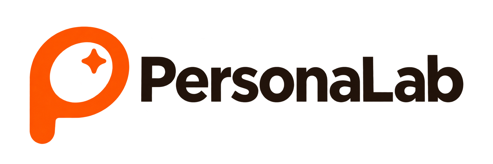

STUDENT
继续上次项目
新建项目
科创团队验证工作台
让好创意，
经得起验证。
梳理不同人群的需求与痛点，预演原型。把真人测试与迭代依据整理成参赛材料。
创建科创项目
→
体验完整案例
✓
无需注册
✓
本地保存
✓
假设与证据分开
示例项目
验证进行中
校园 AI 学习助手
临时任务出现时，学生能否更快完成重排？
3
重点人群
2
来源资料
1
待测假设
下一步
用 Mirror 走查核心任务 →
✦
Spark
从痛点到假设
◫
Mirror
从原型到问题
别急着证明“它很好”
先找到一个可以被观察的变化。
项目验证流程
01
定义场景
谁在何时遇到什么阻碍
→
02
发现分歧
不同 Persona 看重什么
→
03
预演原型
核心任务在哪里卡住
→
04
真人验证
观察行为而非只问喜好
→
05
提交表达
用证据讲清改动与价值
☰
PersonaLab Student
/
项目总览
本地自动保存
?